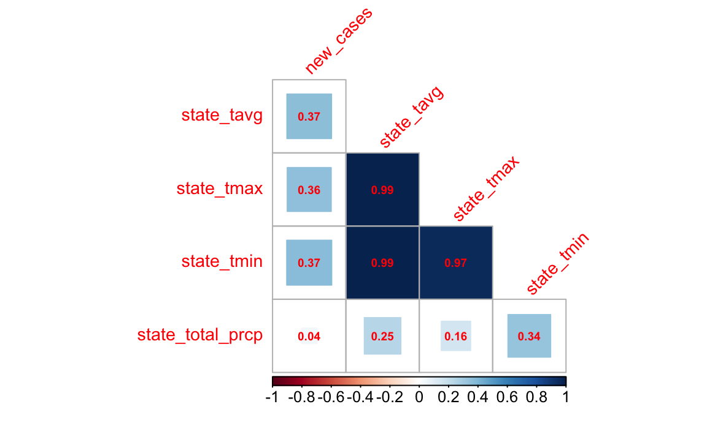
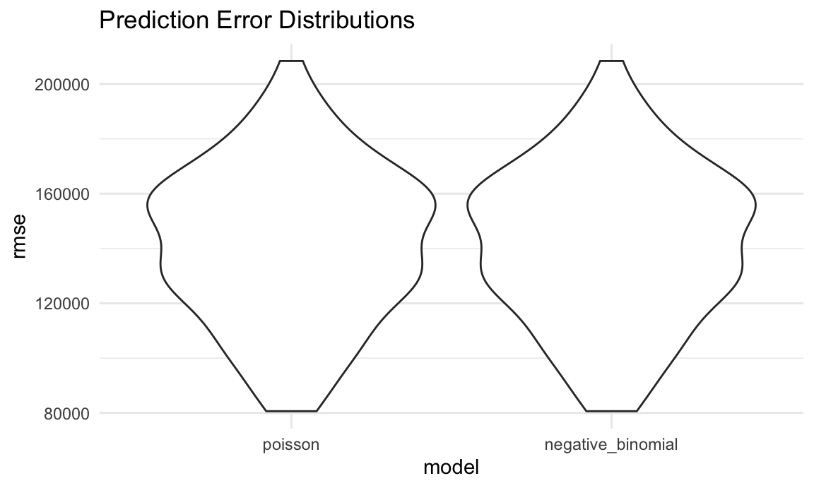

## ── Attaching packages ───────────────────────────────────────────────────────────────────────────────────────────────────────────────────────────── tidyverse 1.3.0 ──## ✓ ggplot2 3.3.2 ✓ purrr 0.3.4
## ✓ tibble 3.0.3 ✓ dplyr 1.0.0
## ✓ tidyr 1.1.0 ✓ stringr 1.4.0
## ✓ readr 1.3.1 ✓ forcats 0.5.0## ── Conflicts ──────────────────────────────────────────────────────────────────────────────────────────────────────────────────────────────── tidyverse_conflicts() ──
## x dplyr::filter() masks stats::filter()
## x dplyr::lag() masks stats::lag()##
## Attaching package: 'lubridate'## The following objects are masked from 'package:base':
##
## date, intersect, setdiff, union## Loading required package: nlme##
## Attaching package: 'nlme'## The following object is masked from 'package:dplyr':
##
## collapse## This is mgcv 1.8-33. For overview type 'help("mgcv-package")'.## Loading required package: xml2##
## Attaching package: 'rvest'## The following object is masked from 'package:purrr':
##
## pluck## The following object is masked from 'package:readr':
##
## guess_encodingcovid_noaa_dataset =
inner_join(covid_data,noaa_dataset, by = c("key_alpha_2" = "state_code", "month" = "month")) %>%
mutate(
month_name = month(ymd(date), label = TRUE, abbr = FALSE)
) %>%
rename(case_count = "confirmed")
write_csv(covid_noaa_dataset, "data/covid_noaa_dataset.csv" )Our team hypothesizes that there is a relationship between temperature and COVID-19 cases.
The following are the relevant predictors we want to include in the model
new_cases- The number of new cases in every month.case_count - The total number of cases in every month.population- Total population of each state - This forms the offset variable in the poisson regression model and the demoninator for the count to extrapolate the rate.state_name- All the states in the USAstate_tavg- The average temperature in a state in a month.state_tmax- The maximum temperature in a state in a monthstate_tmin- The minimum temperature in a state in a monthstate_total_prcp - The total precipitation in a state in a month.library(MASS)##
## Attaching package: 'MASS'## The following object is masked from 'package:dplyr':
##
## selectcovid_noaa_dataset_cor =
covid_noaa_dataset %>%
dplyr::select(new_cases, state_tavg, state_tmax, state_tmin, state_total_prcp)## Adding missing grouping variables: `month`, `key_alpha_2` covid_noaa_dataset_cor[,3:7] %>%
cor() %>%
corrplot::corrplot(type = "lower",
method = "square",
addCoef.col = "red",
diag = FALSE,
number.cex = .6,
tl.col = "red",
tl.cex = .9,
tl.srt = 45)
poisson_mod = glm(new_cases ~ as.factor(month) + state_tavg + state_total_prcp,
family = "poisson"(link = "log"), data = covid_noaa_dataset)
poisson_mod %>%
broom::glance() %>%
dplyr::select(AIC) %>%
knitr::kable(digits = 3)| AIC |
|---|
| 28597532 |
neg_bin_mod = glm.nb(new_cases ~ as.factor(month) + state_tavg + state_total_prcp,
data = covid_noaa_dataset)
neg_bin_mod %>%
broom::glance() %>%
dplyr::select(AIC) %>%
knitr::kable(digits = 3)| AIC |
|---|
| 9174.884 |
Since the AIC for Poisson is 28597532 and the AIC for negative binomia regression model is 9174.884, we decided to proceed with negative binomial regression model
count_cv =
crossv_mc(covid_noaa_dataset, 100)
count_cv =
count_cv %>%
mutate(
model_poisson = map(train, ~glm(new_cases ~ as.factor(month) + state_tavg + state_total_prcp,
family="poisson" (link = log), covid_noaa_dataset)),
model_neg_binomial = map(train, ~ glm.nb(new_cases ~ as.factor(month) + state_tavg + state_total_prcp,
data = covid_noaa_dataset))) %>%
mutate(rmse_poisson = map2_dbl(model_poisson, test, ~rmse(model = .x, data = .y)),
rmse_negative_binomial = map2_dbl(model_neg_binomial, test, ~rmse(model = .x, data = .y)))
count_cv %>%
dplyr::select(rmse_poisson, rmse_negative_binomial) %>%
pivot_longer(
everything(),
names_to = "model",
values_to = "rmse",
names_prefix = "rmse_") %>%
mutate(model = fct_inorder(model)) %>%
ggplot(aes(x = model, y = rmse)) + geom_violin() +
labs(
title = "Prediction Error Distributions"
)